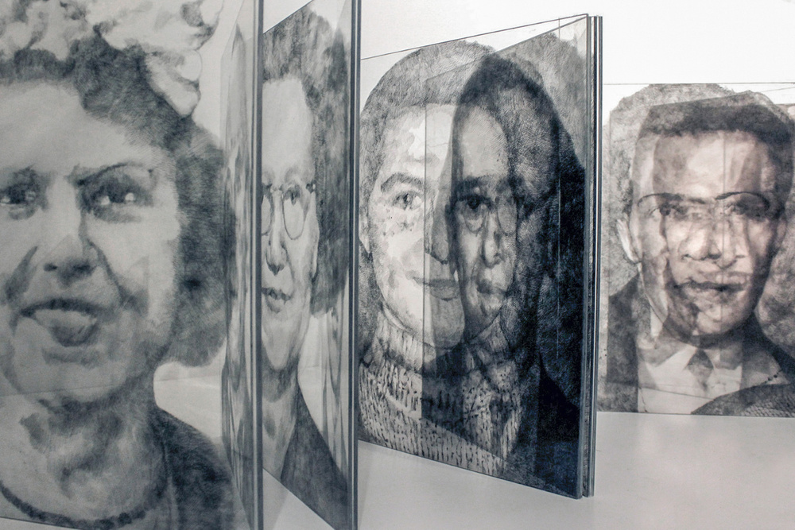
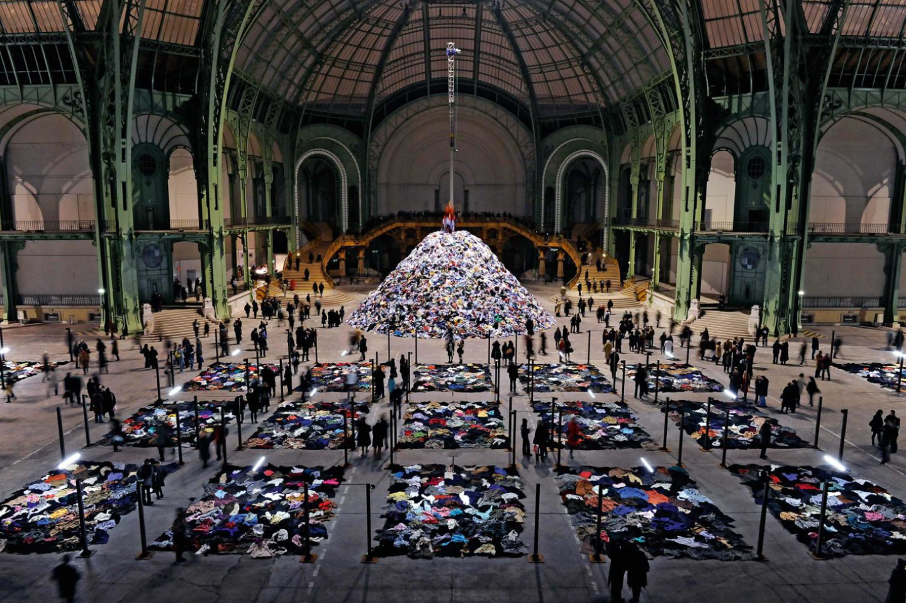
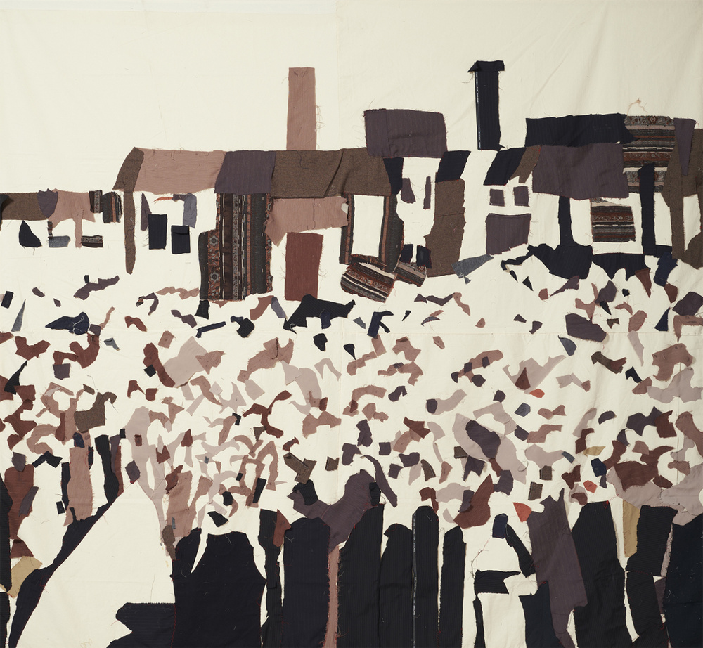

16 de julio
Querida Elián,
¿Cómo estás? Me parece muy sorprendente que, a
pesar de pensar bastante en tu obra desde que la conocí en la que
creo que fue una de tus primeras exposiciones sola, en la salita de
Dodecá (¿año 2012? ¿2013?), nunca te haya vinculado con Christian
Boltanski. Increíblemente solo con su muerte, hace un par de días,
se me ocurrió la conexión.
Creo que fue en 2019 que vi la que
sería su última gran exposición en Beaubourg, como le dicen todavía
al centro Pompidou algunos parisinos, y recuerdo haber tenido
sensaciones encontradas: por un lado me impactó ver su obra en
persona, porque nunca lo había hecho, pero a la vez me pareció un
poco abrumador. Hoy pienso que el efecto de acumulación también
tiene su interés: sus reflexiones giran casi todas, a fin de
cuentas, en torno a un mismo tema: la memoria, que ha interesado a
muchísimos intelectuales y artistas judíos, sobre todo a partir de
los 30 y el auge del nazismo. Por supuesto, no es casualidad que
haya sido el sociólogo Maurice Halbwachs, que murió en 1945 en el
campo de concentración de Buchenwald, quien desarrolló el concepto
de memoria colectiva, en parte una discusión con su maestro, el gran
Henri Bergson, que pensaba en la memoria desde un punto de vista más
subjetivo, personal.
En todo caso, creo que tus elaboraciones
artísticas, sobre todo en tus primeras etapas (no sé si tanto
ahora), manejan estas dimensiones de la memoria, siempre ligadas
también a tus orígenes familiares, a la diáspora, a la construcción
de la identidad. ¿En qué sentido fue importante para vos Boltanski
en esta búsqueda?
Te mando un fuerte abrazo,
f.
19 de julio
¡Querido!
¡¡¡Nombraste además a dos teóricos que usé en mi
tesis de Maestría!!!, sobre todo a Halbwachs y precisamente por
dicho concepto.
Boltanski siempre fue una referencia
ineludible, por momentos más próxima y por otros más lejana. Lejana,
cuando la obra se vuelve monumento, no solo por sus dimensiones sino
por ese culto excesivo a la memoria. Se lo criticó mucho por esos
excesos y esas repeticiones de las que hablás, pero creo que alguien
tenía que hacerlo y no es casualidad que le haya tocado a un artista
francés con la historia que este país tiene en relación al
holocausto y la ideología nazi de la teoría de superioridad racial
(hablando de Gobineau en concreto).
Me siento enormemente
identificada con el recurso de la repetición como mecanismo
expresivo intrínsecamente relacionado con el genocidio, con la
violencia de grandes grupos de gente. Por un lado por esa
deshumanización resultado de no considerar al otro como individuo,
sin nombre, sin ropa. La idea de un número más en una cuenta que
parece infinita. En suma y un poco en contraposición, la memoria
funciona por repetición: una historia que se cuenta una y otra vez
para no ser olvidada y que es en esta misma reelaboración que
deviene en cambio. Esos pequeños matices que al ser repetidos
terminan por cambiar el relato de una forma orgánica. Como las
generaciones humanas: el hijo no es el padre ni es el abuelo pero es
una réplica, la imagen de un cierto espejo familiar (y quizá por eso
me gustó tanto Zerkalo de Tarkovski).
Retomando a
Boltanski en concreto, es sin duda para mi un artista de referencia
a veces por similitud y otras por lejanía. Pero sea como sea, él
logró evidenciar de forma simbólica nuevas preguntas que estaban
siendo necesarias luego de la Segunda Guerra Mundial, y en mi
opinión eso ya es motivo de agradecimiento.

Elián Stolarsky - Inventario 4 / libro de artista - 2013
21 de julio
Elián, ¿cómo estás?
Es muy interesante tu visión sobre la repetición. A mí, en la
exposición de la que hablaba, me pareció que de haber habido menos
obras tal vez habría sido mejor. El otro día veía, justo, uno de los
capítulos de la serie Agnès de ci de là Varda, de Agnès
Varda, y en un capítulo habla con Boltanski y muestra una de sus
obras monumentales, como las llamás vos. Fue lo que hizo en el Grand
Palais en 2010: una serie de rectángulos trazados en el suelo, con
ropa puesta adentro de manera algo caótica, hilos que comunicaban
unos de altoparlantes desde los que se oían corazones, una montaña
de ropa que era levantada y dejada caer por una grúa roja. No sé...
Él explica todo eso a Varda, y lo entiendo: el orden de los
regímenes y la mezcla de los individuos, las claras referencias a
los campos de concentración (nazis y no nazis), pero a la vez hay
algo que se me pierde en toda esa cosa espectacular, enorme. En todo
caso, esto me hizo pensar en tus últimos trabajos, con telas. ¿Cómo
funciona eso para vos? Yo veo en tus cosas, en lo que pude ver al
menos, un rasgo más íntimo. Hay un interés, como decías, por el tema
de la prenda de vestir, en su relación con la identidad, pero está
modulado de otro modo... No sé qué pensás de esto.
Un abrazo y
hasta la próxima,
f.

Christian Boltanski - Personnes, Monumenta, Grand Palais, Paris, 2010, © ADAGP, Paris, 2018 / Foto de Didier Plowy.
26 de julio
¡Estimado! Acá la sigo:
Mis trabajos en ese sentido van por una
línea muy diferente si, y también vuelvo a nombrar lo contingente de
ambos casos. Boltanski también tiene muchos libros de artista, o sea
trabaja con la escala íntima, la fotografía familiar, la lectura
pausada. No digo que si algún día llegase a adquirir la fama de
Boltanski vaya a hacer si o si instalaciones de escalas
monumentales, pero sí que también hay algo del trabajo de lo íntimo
que tiene que ver con los recursos disponibles y con ciertas etapas
creativas. El contexto del artista hace también parte de la obra, y
el hecho de que en mis últimos años lo único que haya hecho haya
sido moverme de un sitio a otro, también influyó en que la obra
resultado de estos procesos sea una obra fácil de empacar, que habla
de estos procesos de autoconocimiento y diálogo conmigo misma.
Y
como digo antes, el contexto es parte pero tampoco lo es todo, sí
hay una intención de rescatar lo íntimo como espacio posibilitador
de un diálogo más inmediato, más básico, y directo que surge de la
propia necesidad de dialogar directamente con el material. La mano
sobre la obra, el oficio como medio, como lenguaje.
29 de julio
Querida Elián,
Es interesante ver el impacto de los contextos
en las obras, en la elección de los materiales, por ejemplo, que
muchas veces no es quizás una decisión artística (como si pudiera
pensarse puramente en esos términos) sino de contingencia. Cuando vi
tu exposición en el MNAV me pareció que el textil era un lenguaje
nuevo, que estabas explorando, como una promesa de lo que venía,
mientras que tu obra gráfica, tus piezas en acrílico, etc., daban la
impresión de algo más depurado, una investigación consistente con
las formas, con las técnicas, como un discurso que cada vez aparecía
más refinado.
Recuerdo especialmente lo que presentaste para el
Cézanne en 2013, me parece, que además ganaste. Era una obra en la
que se veía una trayectoria y que me hace pensar también en
Boltanski, que jugaba mucho con el blanco y negro, con las
transparencias, con esa idea del tiempo. En tu caso, a través de los
rostros familiares, se presentaba esa doble cualidad del paso de los
años y también de lo igual, de lo que cambia y lo que permanece, del
pasado y el presente no como puntos de una línea, sino como campos
que muchas veces coexisten y se superponen.
Obviamente, esto
tiene una gran importancia para artistas marcados históricamente por
los cambios, por el viaje, por la multiplicidad de lenguas. En el
pueblo judío, específicamente, esto es remarcable: la capacidad
general, a la vez, de adaptarse a los nuevos lugares y de conservar
eso que los vincula con los antepasados. ¿Qué pensás de esto?, ¿cómo
sentís que marcó tu obra?, ¿cuál es tu relación con la tradición?
Un
abrazo,
f.

Elián Stolarsky - Y todos los otros / serie. Telas cocidas a mano - 2016-2018.
3 de octubre
Más vale tarde que nunca… ¿quizá? (me pasé esta vez un poco...)
Como
decís, la obra en acrílicos es la que me viene acompañando desde
hace más tiempo. Al material lo observé desde todas sus propiedades:
su transparencia, su grosor, su dureza, su flexibilidad, su
capacidad de transmitir la luz y de generar sombras. Hasta llegar al
punto ese en el que ya no encuentro sorpresas o nuevas aristas desde
donde perseguir algo diferente. Creo que también por eso surgieron
las telas: por esa necesidad de no control de un material. Se
establece una conversación; hay más investigación e ingenuidad en un
encuentro que cuando poseo el control. Esa sensación de juego me
motiva. Es ligera. Un poco contraria a la idea de tradición.
La
tradición a veces pesa, pero también empuja. Este tironeo de fuerzas
opuestas creo que tiene mucho que ver con ser judío/a. No es fácil
asumir responsabilidades por el mero hecho de nacer, pero al mismo
tiempo da cierto leitmotiv al por qué estar viva. Mi obra está muy
ligada a la tradición y es por medio de este camino que también
pretendo librarme de ella. Suena más contradictorio de lo que en
realidad es. Hacer grabado, dibujar o coser son actividades que se
asocian a cierta manera, a ciertas costumbres; hasta si querés al
pasado mismo. Se las denomina «técnicas tradicionales» en oposición
a técnicas más nuevas asociadas a la tecnología contemporánea. La
idea de que ya haya un camino recorrido y una propia historia de
dichos procesos me gusta, me permite hablar de mi propia historia y
de esa necesidad de aceptación al mismo tiempo que de liberación.
Abrazo y ¡prometo no demorar tanto la próxima!,
E
Francisco Álvez Francese
Montevideo, 1992.
Licenciado en Letras por la Universidad de la República, magíster
en Filosofía por la Université de Paris VIII y doctorando de
Estudios hispánicos en la misma institución. Es coeditor (junto a
Roberto Echavarren) de una antología de poemas y conferencias de
Federico García Lorca (2019) y autor de la selección comentada de
poemas uruguayos Los restos del naufragio (2019) y del ensayo La
noche americana (2020). Además, colabora en la sección cultural
del periódico La Diaria y la web de la librería Escaramuza.